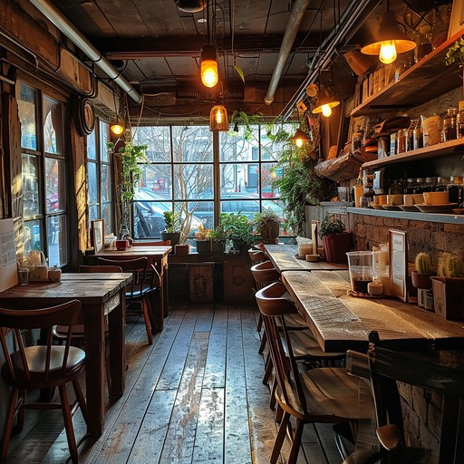

Our story
A proper neighbourhood institution
Cafe Central isn't fancy — and that's exactly the point. We're the relaxed, unpretentious corner of Carlisle where the regulars are on first-name terms, the breakfasts are built to keep you going all day, and the walls are covered in retro community prints collected over the years.
Locals come for the high-value all-day breakfasts and stay for the ultra-thick hot toasties — pressed, golden and oozing, the way a toastie should be.
- All-day breakfast — order the full works at 2pm, nobody blinks.
- Ultra-thick toasties — our signature, pressed to order.
- Proper value — big plates, honest prices.

The room — relaxed, unpretentious, ours.